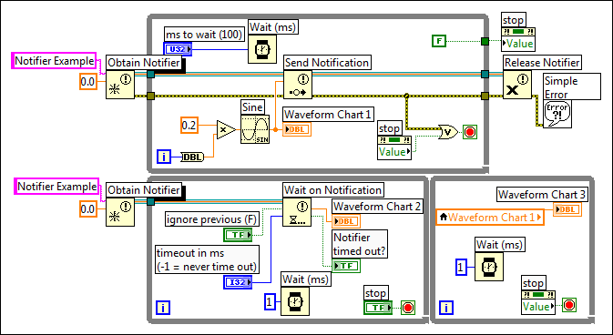

The following example shows a common mistake when using the Notifier Operation functions and a stop Boolean control in a While Loop.
When the value of the stop Boolean control in the second loop changes to TRUE, the VI does not always stop, and the user must click the Abort Execution button to stop the VI completely. The reason is because the loop does not finish executing until each function in the loop completes its last execution, and the Wait on Notification function in the second loop is not connected to a stop condition.

Complete the following steps to correct this problem.